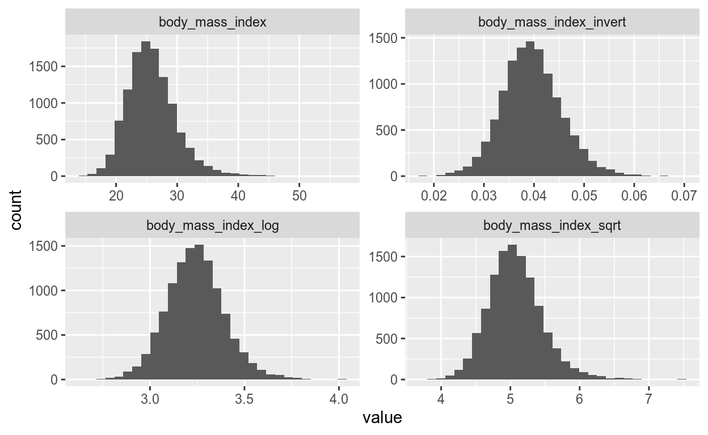
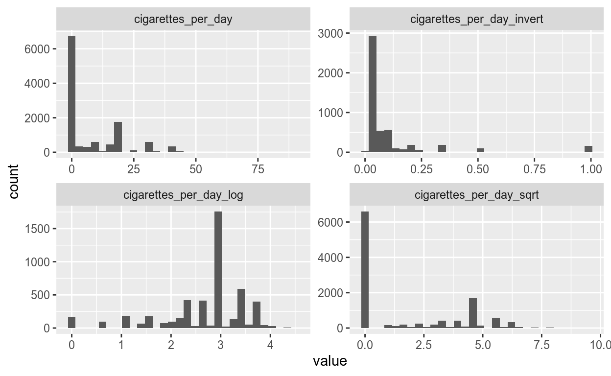

Pre-wrangling exploration
We’ve gone over the basics of cohorts and some initial explorations. In this chapter we’ll cover common wrangling tasks and visually exploring cohort data. Before statistically analyzing cohort data, you’ll need to explore and wrangle it into an appropriately analyzable format.
Univariate (“one variable”) visualizations
library(ggplot2)
# Histogram of body mass
ggplot(tidier_framingham,
# Aesthetic mapping
aes(x = body_mass_index)) +
geom_histogram()Histogram of body mass index
A useful way to look at data is with univariate distributions using histograms, which count the number of times a given value occurs. We’ll create histograms using ggplot2. We first set up the plot using the ggplot function. This takes two arguments, the dataset and the aesthetic mapping or aes function. Aes indicates where to map variables to plot aspects like the x-axis. We want a univariate plot, so we’ll set x to a continuous variable like body mass. The histogram layer is added with the plus sign followed by geom_histogram().
Visualize many variables with “longer” data
library(dplyr)
wide_form <- tidier_framingham %>%
select(subject_id,
body_mass_index,
participant_age)
head(wide_form, 4)# A tibble: 4 x 3
subject_id body_mass_index participant_age
<dbl> <dbl> <dbl>
1 2448 27.0 39
2 2448 NA 52
3 6238 28.7 46
4 6238 29.4 52If we want to visualize several variables, plotting them one by one is less than ideal. There’s an easier way though, by using ggplot facets. We’ll go over facets soon, but to optimally use facets we’ll need the data in the long form.
Our data right now is in wide form. To illustrate, I’m only using a couple variables. Wider data has variables as columns and those variables’ values are the individual rows.
Convert to “longer” form using gather from tidyr
library(tidyr)
long_form <- wide_form %>%
head(4) %>%
gather(variable, value, -subject_id)
long_form# A tibble: 8 x 3
subject_id variable value
<dbl> <chr> <dbl>
1 2448 body_mass_index 27.0
2 2448 body_mass_index NA
3 6238 body_mass_index 28.7
4 6238 body_mass_index 29.4
5 2448 participant_age 39
6 2448 participant_age 52
7 6238 participant_age 46
8 6238 participant_age 52 We use the gather function from tidyr to convert to long form. For illustration I’ll only show four rows using head. Gather takes four arguments: data, key, value, and the variable selection. Data is already given by the pipe. The key is the name to give the new column that will contain the original variable names. The value is the name to give the new column that will contain the variable values. We’ll simply call the new columns variable and value. The last optional argument is the one or more variables we want to include or exclude from gathering. Here we want to exclude subject ID by using minus.
Longer data is in more of a stacked form, with variable names as data in a column here called variable and their associated value in a new column, again, here called value.
Visually explore multiple variables
wide_form %>%
gather(variable, value, -subject_id) %>%
ggplot(aes(x = value)) +
geom_histogram() +
facet_wrap(vars(variable), scale = "free", nrow = 1)Facetted histograms of mutliple variables.
Let’s now use this long data by piping it into ggplot. We then set x to the value column with the original data. Then we add the histogram geom and to facet use the facet_wrap() function. This function takes several arguments, but the first is the variables you want to facet. The one or more variables to facet need to be wrapped in the vars function. We’re setting scale to free as the variables’ values have different ranges. Setting nrow to one puts all the facets in one row.
Now we have a single plot with multiple histograms! You can very quickly explore more of the data. Longer data can also be leveraged for many other analysis tasks too, which we’ll cover in later chapters.
Visually explore the exposure by outcome
tidier_framingham %>%
mutate(got_cvd =
as.character(got_cvd)) %>%
ggplot(aes(
x = got_cvd,
y = body_mass_index)) +
geom_boxplot()coord_flip()for horizontal boxplots

Boxplot of CVD and body mass index.
Univariate visualizations are great but let’s explore how the exposures look in relation to the outcome. For categorical outcomes like CVD, boxplots are great for showing the data’s distribution using the median, the twenty-fifth and seventy-fifth percentile, and a measure of slightly more extreme values.
Since CVD’s values are either zero or one, we’ll need to convert it to categorical with mutate and as-dot-character. Then we set x to be CVD and y needs to be a continuous variable. Add the geom_boxplot() layer and we get a boxplot figure!
To make the boxplots horizontal instead of vertical, you’ll need to use coord_flip().
Exploring time!
Alright, let’s visualize some variables!
Plot univariate distributions
Let’s get comfortable creating some univariate histograms to start exploring the data. Create several histograms of a couple variables. The ggplot2 package has been loaded.
Exercise step
Instructions:
- Set
xtoparticipant_ageand add ageom_histogram()layer.
# Examine the age histogram
ggplot(tidier_framingham, aes(x = ___)) +
___()"In the `aes()`, the argument should be `x = participant_age`."# Examine the age histogram
ggplot(tidier_framingham, aes(x = participant_age)) +
geom_histogram()"Nice!"Exercise step
Instructions:
- Do the same thing, but set
xtosystolic_blood_pressure.
# Examine the systolic blood pressure histogram
ggplot(tidier_framingham, aes(x = ___)) +
___()"The `aes()` should have `x = systolic_blood_pressure`."# Examine the systolic blood pressure histogram
ggplot(tidier_framingham, aes(x = systolic_blood_pressure)) +
geom_histogram()"Great job! You've created histograms and examined two variables."Long data and visualizing variables over time
Now that you’ve learned how to create histograms, let’s convert some of the Framingham dataset into the long data format using gather(). Then, using the long data form, create histograms for multiple variables simultaneously for each followup visit. This will give us a quick overview of the data and their distribution. Pay attention to how the distribution of each variable looks like.
Exercise step
Instructions:
- Select the variables
total_cholesterol,high_density_lipoprotein, andlow_density_lipoprotein. - Using
gather(), set the two new column names asvariableandvalue, and then excludefollowup_visit_numberfrom being “gathered” (using the-).
tidier_framingham %>%
select(
followup_visit_number,
# Select the three cholesterol-based variables
___, ___, ___
) %>%
gather(___, ___, -___)"The `gather()` function should look like `gather(variable, value, -followup_visit_number)`."tidier_framingham %>%
select(
followup_visit_number,
# Select the three cholesterol-based variables
total_cholesterol, high_density_lipoprotein, low_density_lipoprotein
) %>%
gather(variable, value, -followup_visit_number)"Great!"Exercise step
Instructions:
facet_wrap()by the variablesfollowup_visit_numberandvariable. Don’t forget to use thevars()function.
tidier_framingham %>%
select(
followup_visit_number,
# Select the three cholesterol-based variables
total_cholesterol, high_density_lipoprotein, low_density_lipoprotein
) %>%
gather(variable, value, -followup_visit_number) %>%
ggplot(aes(x = value)) +
geom_histogram() +
# Facet by followup and variables
___(___(___, ___),
scales = "free")"The `facet_wrap()` variables need to be within the `vars()` function and separated by a comma."tidier_framingham %>%
select(
followup_visit_number,
# Select the three cholesterol-based variables
total_cholesterol, high_density_lipoprotein, low_density_lipoprotein
) %>%
gather(variable, value, -followup_visit_number) %>%
ggplot(aes(x = value)) +
geom_histogram() +
# Facet by followup and variables
facet_wrap(vars(followup_visit_number, variable),
scales = "free")"Great!"Exercise step
Instructions:
- Select new variables
participant_age,body_mass_index, andcigarettes_per_day, then run the plot again.
tidier_framingham %>%
select(
followup_visit_number,
# Select the three charactistics
___, ___, ___
) %>%
gather(variable, value, -followup_visit_number) %>%
ggplot(aes(x = value)) +
geom_histogram() +
facet_wrap(vars(followup_visit_number, variable),
scales = "free")"Put the variables in the `select()` function."tidier_framingham %>%
select(
followup_visit_number,
# Select the three charactistics
body_mass_index, participant_age, cigarettes_per_day
) %>%
gather(variable, value, -followup_visit_number) %>%
ggplot(aes(x = value)) +
geom_histogram() +
facet_wrap(vars(followup_visit_number, variable),
scales = "free")"Amazing!"Exercise step
There were several things to observe from the distributions of the variables and some things to consider for later analyses. Did you notice a few of them?
Hint: Run the code again to check the histogram plots.
Visually examine the outcomes with the exposures
Boxplots are great for showing a distribution by a grouping variable (e.g. sex or disease status). Create multiple boxplots of several exposure variables with the outcome variable (CVD) by combining what we learned previously about converting to long form and using faceting. Since we want to plot CVD status on the x-axis, we’ll need to exclude it from being “gathered”.
Instructions:
- Select the variables
got_cvd,total_cholesterol,participant_age, andbody_mass_index. - Also exclude
got_cvdfrom thegather()function and setvaluefor the y-axis inaes(). - Add a
geom_boxplots()layer. - Lastly, flip the plot using
coord_flip().
capture.output({
data(tidier_framingham, package = "acdcourse")
library(dplyr, quietly = TRUE)
library(tidyr, quietly = TRUE)
library(ggplot2, quietly = TRUE)
tidier_framingham <- tidier_framingham %>%
mutate(got_cvd = as.character(got_cvd))
}, file = tempfile())tidier_framingham %>%
select(followup_visit_number,
# Select the disease and the three continuous variables
___, ___,
___, ___) %>%
# Exclude also the disease
gather(variable, value, -followup_visit_number, -___) %>%
ggplot(aes(y = ___, x = variable)) +
# Plot boxplots
___() +
facet_wrap(vars(followup_visit_number), ncol = 1) +
# Flip the plot
___()"- The initial `ggplot2` setup should be `ggplot(aes(x = value, y = variable))`."
"- Include `-got_cvd` after `-followup_visit_number` in `gather()`."tidier_framingham %>%
select(followup_visit_number,
# Select the disease and the three continuous variables
got_cvd, total_cholesterol,
participant_age, body_mass_index) %>%
# Exclude also the disease
gather(variable, value, -followup_visit_number, -got_cvd) %>%
ggplot(aes(y = value, x = variable)) +
# Plot boxplots
geom_boxplot() +
facet_wrap(vars(followup_visit_number), ncol = 1) +
# Flip the plot
coord_flip()"Excellent! You quickly created a figure showing several continuous variables by the outcome, and over time! Notice how some variables are a bit higher in the `got_cvd` group and that over time these differences decreased? Also notice the problem of showing multiple variables that have vastly different values such as between body mass and cholesterol."Discrete data and tidying it for later analysis
Cohort datasets often contain many discrete variables, for example with data obtained from questionnaires. In this lesson, you’ll learn when and how to tidy up discrete data.
A comment on “dichotomania”
Dichotomania: The obsession to convert continuous data into discrete or binary data
- Also called discretizing or dichotomizing
- Example: obese = body mass index > 30
First I want to mention a problem common in health research, known as dichotomania. Dichotomania is an obsession to convert continuous data into discrete data. It is also called discretizing or dichotomizing. For example, obesity is defined as a BMI greater than thirty.
Don’t discretize continuous data
- Discretizing:
- Reduces statistical power
- Little clinical value
- Higher misclassification
- Should be avoided
Discretizing can cause a lot of problems. For instance it reduces statistical power, provides little clinical value, and there is a higher chance of misclassifying an individual’s health risk. So, avoid it as much as you can.
The problem of discretizing: An visual example
| Category | BMI range |
|---|---|
| “Underweight” | < 18.5 |
| “Normal weight” | 18.5 - 25 |
| “Overweight” | 25 - 30 |
| “Obese” | > 30 |
# For next figure:
tidier_framingham %>%
ggplot(aes(x = body_mass_index)) +
geom_histogram(colour = "black", fill = "grey80") +
geom_vline(xintercept = c(20, 25, 30), linetype = "dashed")You may be familiar with the different weight classes used according to your body mass index, or BMI. These classes, shown in the table, are often used in health research. Let’s visually show why this is a problem. The code provided creates the image shown next.
The problem of discretizing: An visual example
Discretizing a continuous body mass index.
BMI continuously occurs at every value from 10 to more than 60. The three vertical lines are when discretization is applied to the data. Huge chunks of people are classified with others even if they are very close to one of the lines. For instance, someone with a BMI of twenty would be classified equally as someone with a BMI of twenty-four point nine. Or, if someone gains a BMI of zero point two, they could move from one category to the next. Biologically, this makes no sense. So, as best you can, avoid dichotomizing variables!
Reducing levels of naturally discrete variables
- Naturally/generally discrete: Usually no fractions
- “Pills taken”: 1 or 2 pills, but not 1.5
- Reasons to reduce:
- Large error in measurement, e.g. “Eggs eaten daily?”
- Data entry errors
- Small sample sizes in some levels
- Ease of interpretation
While discretizing a continuous variable is often discouraged, some variables tend to be more naturally discrete. For example, you usually take one or two pills, not one point five. Sometimes, reducing the number of levels in these discrete variables makes sense, such as when there is large error in measurement or data entry, small sample sizes in some levels, or easier interpretation.
Reducing levels of naturally discrete variables
# A tibble: 46 x 2
cigarettes_per_day n
<dbl> <int>
1 0 6598
2 1 162
3 2 98
4 3 183
5 4 65
6 5 181
7 6 77
8 7 47
9 8 52
10 9 149
# … with 36 more rowsLet’s use cigarettes per day as an example and use the count function on the variable. We can see that the values are integers. People usually report smoking one or two, not one and a half. From the previous exercise you’ll have seen that more people report a rounded or estimated number, such as about ten or fifteen, but rarely numbers like seventeen. And because there are few people in any given integer, we could simplify the variable.
Reducing levels of a discrete variable
tidier_framingham <- tidier_framingham %>%
mutate(cig_packs_per_day = case_when(
cigarettes_per_day == 0 ~ "None",
cigarettes_per_day >= 1 &
cigarettes_per_day <= 20 ~ "Up to one",
cigarettes_per_day >= 21 &
cigarettes_per_day <= 40 ~ "One to two",
cigarettes_per_day > 40 ~ "More than two",
TRUE ~ NA_character_
))
tidier_framingham %>%
count(cig_packs_per_day)# A tibble: 5 x 2
cig_packs_per_day n
<chr> <int>
1 NA 79
2 More than two 145
3 None 6598
4 One to two 1133
5 Up to one 3672We can tidy up and reduce a variable’s levels by using the case_when() function from dplyr. Since packs of cigarettes usually come with 20 cigarettes, let’s create another variable for number of packs smoked. case_when() takes multiple arguments, each is in the form of a condition on the left of the tilde and the output value on the right. So we set the first condition as when cigarettes is zero and assign the value none. The next is when cigarettes is from one to twenty, assigning the value up to one, and so on. The final condition should be formatted as shown when outputting characters. When counting the new variable, it now has less levels.
Further tidying up
library(forcats)
tidier_framingham %>%
mutate(cig_packs_per_day = fct_recode(
cig_packs_per_day,
# Form: "New level" = "Old level"
"More than two" = "One to two"
)) %>%
count(cig_packs_per_day)# A tibble: 4 x 2
cig_packs_per_day n
<fct> <int>
1 More than two 1278
2 None 6598
3 Up to one 3672
4 NA 79Case when is useful for many situations, but the forcats package is specific to tidying up factor variables. Use the fct_recode() function to edit and rename levels directly. The argument has the form of the new level name then equals old names. In this case, we now merged two levels together.
Lesson summary
- Don’t discretize, keep continuous data continuous
- Use
count()to check categorical data - Use
case_when()orfct_recode()to reduce levels
In summary, keep continuous data continuous. Use count, case_when(), and fct_recode() functions to check and reduce categorical data.
Let’s tidy up the cohort dataset more!
Alright, let’s do some tidying!
Make discrete variables human-readable
As you may have noticed, there are several discrete variables with ambiguous values. For instance, sex has the values as either 1 or 2, but what do those numbers mean? Often, you will encounter discrete data as integers rather than descriptive strings when working with cohort datasets. With data like this, you need to have a data dictionary to know what the numbers mean. Let’s fix this problem and tidy up the data so it is more intuitive and descriptive.
Exercise step
Instructions:
- Tidy education up with
case_when()to: 1 = “0-11 years”; 2 = “High School”; 3 = “Vocational”; 4 = “College”.
tidier2_framingham <- tidier_framingham %>%
mutate(education = case_when(
# Use the format: variable == number ~ "string"
education == ___ ~ ___,
TRUE ~ NA_character_))
# Check changed education
count(tidier2_framingham, education)"The form for the `case_when()` should look like `education == 1 ~ "0-11 years"`, for each number-string pairing."tidier2_framingham <- tidier_framingham %>%
mutate(education = case_when(
# Use the format: variable == number ~ "string"
education == 1 ~ "0-11 years",
education == 2 ~ "High School",
education == 3 ~ "Vocational",
education == 4 ~ "College",
TRUE ~ NA_character_))
# Check changed education
count(tidier2_framingham, education)"Excellent!"Exercise step
Instructions:
- Do the same thing for the
sexvariable, to: 1 = “Man”; 2 = “Woman”.
tidier2_framingham <- tidier_framingham %>%
mutate(sex = case_when(
# Use the format: variable == number ~ "string"
sex == ___ ~ ___,
TRUE ~ NA_character_))
# Check changed education
count(tidier2_framingham, sex)"The form for the `case_when()` should look like `sex == 1 ~ 'Man'`, for each number-string pairing."tidier2_framingham <- tidier_framingham %>%
mutate(sex = case_when(
# Use the format: variable == number ~ "string"
sex == 1 ~ "Man",
sex == 2 ~ "Woman",
TRUE ~ NA_character_))
# Check changed education
count(tidier2_framingham, sex)"Awesome! You've tidied up discrete values to be understandable to humans!"Merge factor categories together
Sometimes, categorical variables (as factors or characters) have many levels but only a few observations in one or more of the levels. It might make sense to combine categories together for some analyses or particular questions.
The forcats package has been preloaded as well as the previous tidier2_framingham dataset you tidied.
Instructions:
- Recode the levels of
"Vocational"and"College"education so both are named"Post-Secondary"usingfct_recode(). - Confirm the education levels have been correctly recoded using
count(). - You’ll get a warning message about
NAvalues. Ignore it as it doesn’t matter.
capture.output({
data(tidier2_framingham, package = "acdcourse")
library(forcats)
library(dplyr)
tidier2_framingham$education_combined <- NULL
}, file = tempfile())tidier2_framingham <- tidier2_framingham %>%
mutate(education_combined = ___(
# Merge college and vocational levels
education,
# Form is: "new" = "old"
___ = ___,
___ = ___))
# Confirm changes to variable
count(tidier2_framingham, ___)'`fct_recode()` recoding should be in the form `"new name" = "old name"`, for example: `"Post-Secondary" = "College"`.'tidier2_framingham <- tidier2_framingham %>%
mutate(education_combined = fct_recode(
# Merge college and vocational levels
education,
# Form is: "new" = "old"
"Post-Secondary" = "College",
"Post-Secondary" = "Vocational"))
# Confirm changes to variable
count(tidier2_framingham, education_combined)"Great! You've combined two factor levels together into a new level."Variable transformations
Transforming your variables is a common activity when analyzing cohorts. In this lesson we will cover the what, why, and how of variable transformations.
Why transform variables?
- Transformation: Applying math functions to data values
- Multiple reasons to transform variables:
- To fit with statistical assumptions
- To analyze for linear relationships
- To convert to shared variable unit
- To improve interpretation of model results
Transforming a variable is the act of applying a mathematical function to a variable.
There are many reasons to transform a variable. We transform to fit the variable distribution to assumptions for a statistical technique, to examine linear relationships between variables, or create a common unit among variables for easier comparison. Ultimately, you use transformations to make it easier to interpret your analyses. This is particularly important in health research since your results could be used to improve people’s health.
Common types of variable transformations
- Which to use depends on data, analysis, and desired interpretation
| Type | R code | When to use |
|---|---|---|
| natural log | log(x) |
Highly-right skewed, positive data |
| mean-center | scale(x, scale = FALSE) |
Zero is the mean; use for easier interpretation |
| scaling | scale(x) |
Unit is 1 standard deviation; be careful with longitudinal data |
| square root | sqrt(x) |
Great for count data; handles zeros |
| inverse | 1 / x |
To invert values/unit, but no zeros |
There are many types of transformations. Which you use depends on your data, your choice of statistics, and how you want the results to be interpreted. Here is a table of a few common transformations. The natural logarithm is a very common transformation. You use it when your data is heavily right-skewed. Another common transformation is mean-centering, which is when the values are subtracted by the mean so zero represents the mean. Scaling is also fairly common, which is mean-centering and then dividing by the standard deviation giving units as standard deviations. The square root is great for count data since it handles zeros, unlike the logarithm or inverse. The inverse, also called the reciprocal, is useful for several purposes, such as to reverse the unit. For instance, if a unit is persons per doctor, the inverse is doctors per person.
Transforming your data in R
# Typical way of transforming:
transformed <- tidier2_framingham %>%
mutate(body_mass_index_log = log(body_mass_index_log),
heart_rate_log = log(heart_rate))# More efficient way:
invert <- function(x) 1 / x
transformed <- tidier2_framingham %>%
mutate_at(vars(body_mass_index, heart_rate),
# Form: name_to_append = function
list(scale = scale, log = log, invert = invert))[1] "body_mass_index" "heart_rate" "body_mass_index_scale"
[4] "heart_rate_scale" "body_mass_index_log" "heart_rate_log"
[7] "body_mass_index_invert" "heart_rate_invert" With the mutate function from dplyr, transforming is easy! The typical way of creating new columns from transformations is to use mutate and create variables one by one. This gets tedious fast when there are many more transformations or variables.
A faster way is to use the mutate_at() function. It takes two arguments, the variables specified by the vars function, and the transformation functions given in a list. The list should have name-function pairings, with the name being appended to the end of the variable name to form the newly transformed variable column.
If a transformation function doesn’t exist, I’d recommend creating a function of it so it’s easier to provide in the list. This is what we did with invert here. So, with only one or two lines of code, you’ve transformed all these variables!
Visualizing the transformations
# Long data and facets to show all plots
transformed %>%
select(contains("heart_rate")) %>%
gather(variable, value) %>%
ggplot(aes(x = value, y = stat(density))) +
geom_histogram(colour = "black", fill = "grey80") +
geom_density() +
facet_wrap(vars(variable), scales = "free")Let’s look at what the transformations do. Here is the code that will create the next figure. Notice the contains function in select. This function finds all variables with this string. We’ll plot both a histogram and a density curve. Since both geoms are used, we need to use the stat function with density as the y argument. We convert the data to long form and combine with facet as we’ve done previously, to plot each transformation.
Visualizing the transformations

Transformation distributions for heart rate.
Here are the plotted transforms. Notice how scaling doesn’t change the distribution, but now the middle is approximately zero and the units are in standard deviations. Compare this to the logarithm, which shrinks the distribution, so more extreme values are closer to the middle. Finally, see how the inverse literally inverts the distribution. Larger heart rates are now small and small are large. Consider how which transform you use will change the units and, in later analyses, the interpretation.
Lesson summary
- Transform for many reasons, with many choices
- Be thoughtful and careful about why
- Common ones include
log()andscale() - Transforms can strongly influence distribution
To summarize, we covered when to use transformations and some common types, such as the log or scale. As always, be careful and thoughtful about using transformations. Your findings may influence human health, so you must be sure to avoid possible miscommunication.
Let’s practice transforming some variables!
Let’s practice these transformations!
Apply variable transformations
There are several types of transformations you can choose from. Which one you choose depends on the question, the type of data and their values (e.g. discrete vs continuous), the statistical method you will use, and how you want your results to be interpreted.
Recall the form for mutate_at() is:
mutate_at(
# List variables in here:
vars(...),
# List functions in here, with name-function pair:
list(name = function, ...)
)Instructions:
- In
vars(), addbody_mass_indexandcigarettes_per_day. - In
list(), addlog,sqrt, andinvert(this function is loaded). - Check how these variables changed by selecting the two original variables names using the
contains()function and piping tosummary().
capture.output({
data(tidier2_framingham, package = "acdcourse")
library(dplyr)
invert <- function(x) 1 / x
}, file = tempfile())# Use three transformations on body mass index
transformed_framingham <- tidier2_framingham %>%
mutate_at(vars(___, ___),
list(___ = ___, ___ = ___, ___ = ___))
# Check the created variable summaries
transformed_framingham %>%
select(contains(___),
contains(___)) %>%
summary()'The `select()` function form should look like `contains("body_mass_index")`.'# Use three transformations on body mass index
transformed_framingham <- tidier2_framingham %>%
mutate_at(vars(body_mass_index, cigarettes_per_day),
list(log = log, sqrt = sqrt, invert = invert))
# Check the created variable summaries
transformed_framingham %>%
select(contains("body_mass_index"),
contains("cigarettes_per_day")) %>%
summary()"Excellent! You've transformed two variables into several forms."Compare the different transformations
Visualize how each transformation influences the distribution of the data. Graphing these transformations can provide insight into helping you choose a transformation for the variable.
Since we have several transformations, we want to plot them all on one plot. As we’ve done several times throughout the course, we need to use a long data format combined with facets to achieve this.
The transformed_framingham dataset you previously wrangled has been loaded.
Exercise step
Instructions:
- Pipe
transformed_framinghamintoselect()and usecontains()to keep variables withbody_mass_indexin the name.
# Plot a histogram of body mass transforms
___ %>%
# Keep variables with string in variable name
select(contains(___)) %>%
gather(variable, value) %>%
ggplot(aes(x = value)) +
geom_histogram() +
facet_wrap(vars(variable), scale = "free")'Select the variables with `contains("body_mass_index")`.'# Plot a histogram of body mass transforms
transformed_framingham %>%
# Keep variables with string in variable name
select(contains("body_mass_index")) %>%
gather(variable, value) %>%
ggplot(aes(x = value)) +
geom_histogram() +
facet_wrap(vars(variable), scale = "free")"Amazing!"Exercise step
Instructions:
- Now do the same thing for
cigarettes_per_day.
# Plot a histogram of cigarettes per day transforms
transformed_framingham %>%
# Keep variables with string in variable name
select(contains("___")) %>%
gather(variable, value) %>%
ggplot(aes(x = value)) +
geom_histogram() +
facet_wrap(vars(variable), scale = "free")'Use `contains("cigarettes_per_day")`.'# Plot a histogram of cigarettes per day transforms
transformed_framingham %>%
# Keep variables with string in variable name
select(contains("cigarettes_per_day")) %>%
gather(variable, value) %>%
ggplot(aes(x = value)) +
geom_histogram() +
facet_wrap(vars(variable), scale = "free")"Great! Check out how each transformation influences the distribution of body mass index and of the number of cigarettes smoked."How does the distribution change?
Understanding how each transformation influences the units and the distribution of the data is an important step in properly applying these transformations. Try answering these questions about the shape of the data after each transformation.
Both bmi_transforms_plot and cpd_transforms_plot are loaded for you to examine. Looking at the graphs, observe how each transformation influences the distribution of body mass index or cigarettes per day and think about how these new distributions might influence later analyses.
